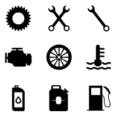

Rješenja

Live praćenje
Kompletan vozni park dostupan u svakom trenutku!
Eko vožnja
Optimizacijom vozačkog stila do dodatnih ušteda
Putni nalozi
Automatsko kreiranje na osnovu pređene rute vozila
Kontrola potrošnje goriva
Detaljna analiza i izvještaji

Organizacija i optimizacija vozila
Jednostavniji pregled i efikasnije upravljanje
NEX Taho
Kompletno Rješenje za Upravljanje Tahografskim Podacima u Realnom Vremenu

Planiranje ruta
Uzmite u obzir najkraći ili najbrži put, vrijeme provedeno na lokaciji
